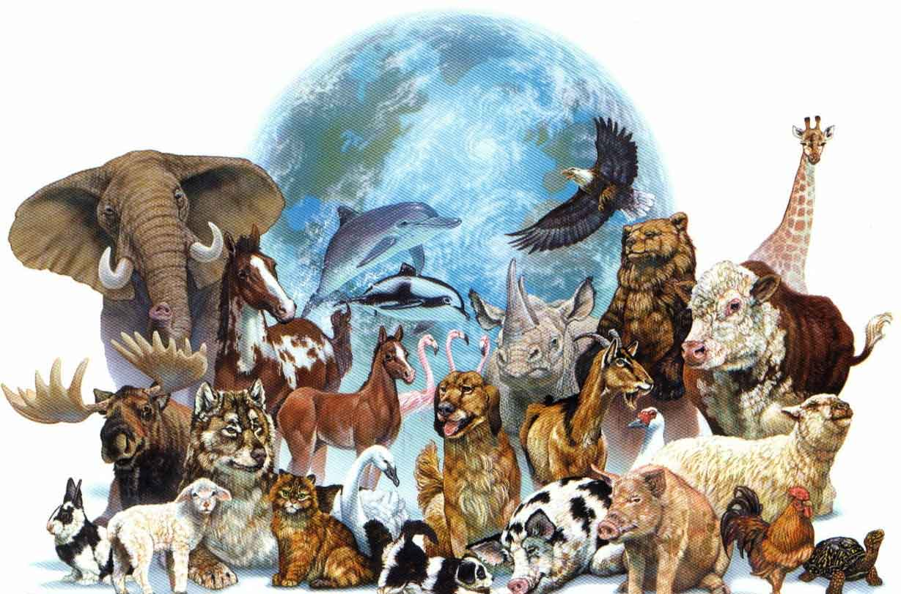

Sobre Nós
Hoje em dia, muitas pessoas têm uma visão romantizada da natureza e do que significa para os animais viver no mundo selvagem. Elas acreditam que natureza é algum tipo de paraíso onde animais vivem vidas felizes. Outras pessoas estão cientes de que animais no mundo selvagem podem sofrer e morrer prematuramente de diferentes formas, mas acreditam que são exceções. Porém, a verdade é muito diferente disso.
Muitos animais selvagens correm riscos constantes de morte por diversas razões. Na verdade, a grande maioria deles morre logo após vir à existência, tendo vivido apenas pouco mais que a dor de sua morte. Isto acontece pois muitos animais se reproduzem tendo grande número de descendentes, sendo que, na média, apenas uma cria por adulto sobrevive até a maturidade.
